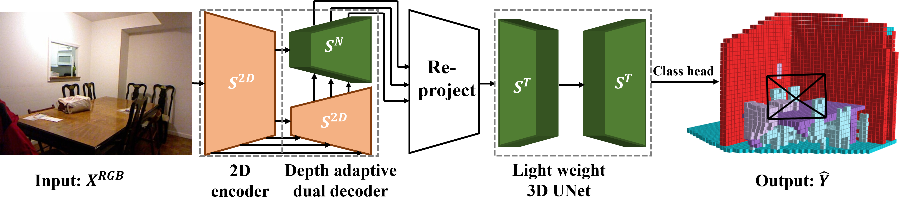
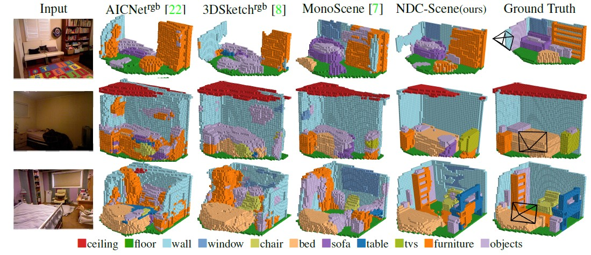
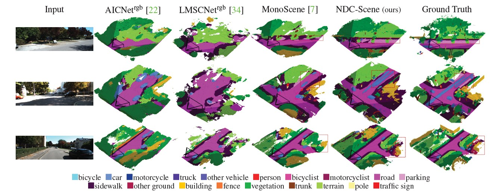

NDC-Scene: Boost Monocular 3D Semantic Scene Completion in Normalized Device Coordinates Space
ICCV 2023
1 University of Washington,
2 The University of Sydney
3 CUHK-SenseTime Joint Laboratory,
4 Shanghai Al Laboratory,
5 CPII under InnoHK
3 CUHK-SenseTime Joint Laboratory, 4 Shanghai Al Laboratory,
5 CPII under InnoHK
Abstract
Monocular 3D Semantic Scene Completion (SSC) has garnered significant attention in recent years due to its potential to predict complex semantics and geometry shapes from a single image, requiring no 3D inputs. In this paper, we identify several critical issues in current state-of-the-art methods, including the Feature Ambiguity of projected 2D features in the ray to the 3D space, the Pose Ambiguity of the 3D convolution, and the Computation Imbalance in the 3D convolution across different depth levels. To address these problems, we devise a novel Normalized Device Coordinates scene completion network (NDC-Scene) that directly extends the 2D feature map to a Normalized Device Coordinates (NDC) space, rather than to the world space directly, through progressive restoration of the dimension of depth with deconvolution operations. Experiment results demonstrate that transferring the majority of computation from the target 3D space to the proposed normalized device coordinates space benefits monocular SSC tasks. Additionally, we design a Depth-Adaptive Dual Decoder to simultaneously upsample and fuse the 2D and 3D feature maps, further improving overall performance. Our extensive experiments confirm that the proposed method consistently outperforms state-of-the-art methods on both outdoor SemanticKITTI and indoor NYUv2 datasets.
Demo video
Method

NDC-Scene framework
We first exploit an 2D image encoder to produce multi-scale 2D feature maps, followed by our Depth-Adaptive Dual Decoder to restore the 3D feature map, which is further re-projected to the target space to predict the SSC result via a light-weight 3D UNet and a class head.

Depth-adaptive dual decoder
We infer the initial 3D feature map via a simple reshaping operation, and take the final feature map from the 2D image encoder as the the initial 2D feature map.

Depth-adaptive attention
We infer the attention matrix via the inner-production between the 3D query feature and the 2D key feature on each group. We omit the value projection for computation reduction
Qualitative results

NYUv2 (test set)
Semantic KITTI (validation set)
Bibtex
If you find this project useful for your research, please cite
@inproceedings{todo,
title={todo},
author={todo},
booktitle={todo},
year={todo}
}
Acknowledgements
This project is funded in part by National Key R&D Program of China Project 2022ZD0161100, by the Centre for Perceptual and Interactive Intelligence (CPII) Ltd under the Innovation and Technology Commission (ITC)’s InnoHK, by General Research Fund of Hong Kong RGC Project 14204021. Hongsheng Li is a PI of CPII under the InnoHK.
This project is built based on MonoScene. We thank the contributors of the prior project for building such excellent codebase and repo. Please refer to this repo for more documentations and details.